Turning Tides / Fashion
Un-tie
About the project
"Untie” is a bold, street-style fashion campaign created for Turning Tides’ Fall 2024 tie release. Shot by Peter Sanjur on vibrant New York City corners, the series captures a playful, editorial energy with bright colors, dynamic compositions, and contemporary menswear styling. The imagery reflects an unbuttoned sense of freedom, fusing urban grit with polished flair.
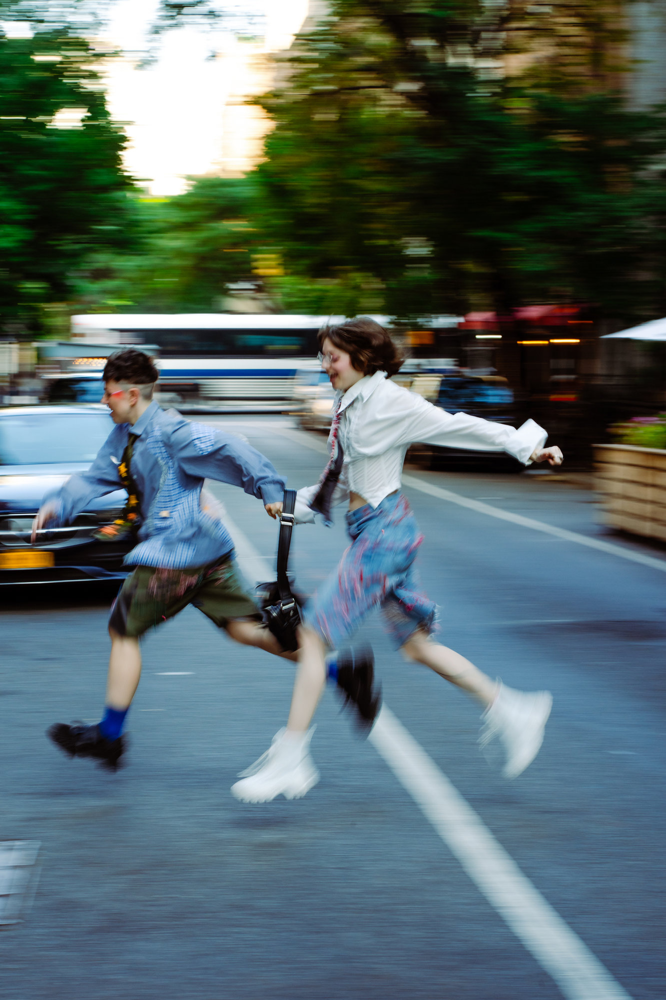
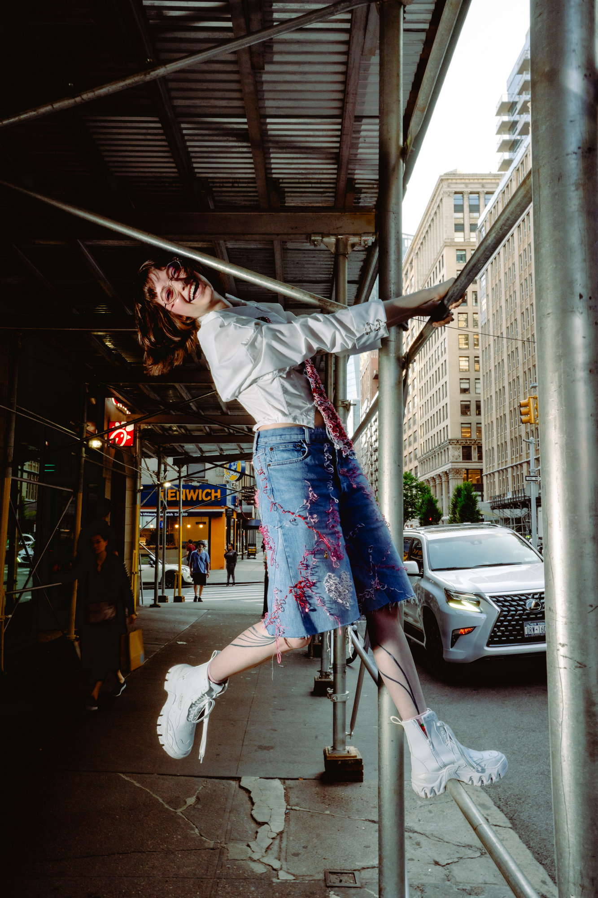
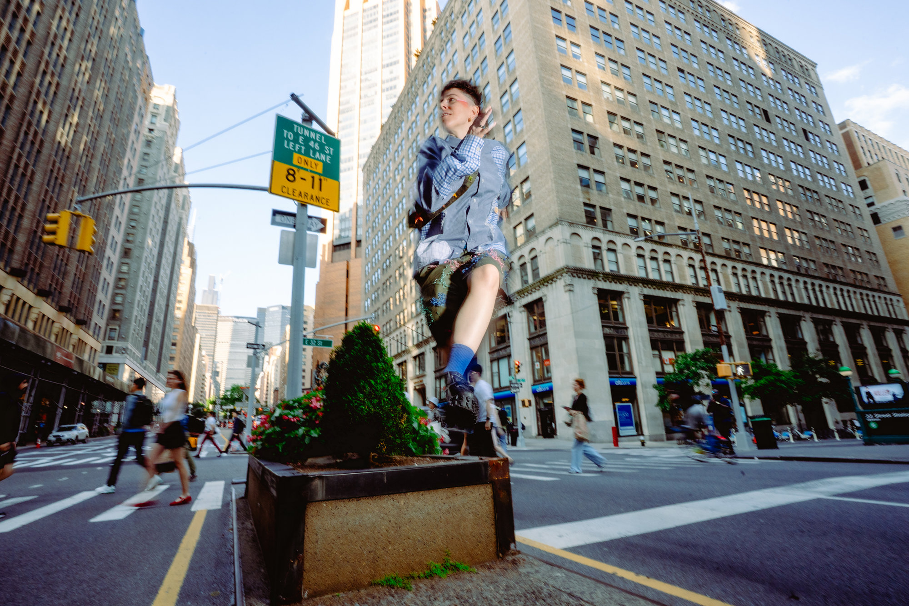
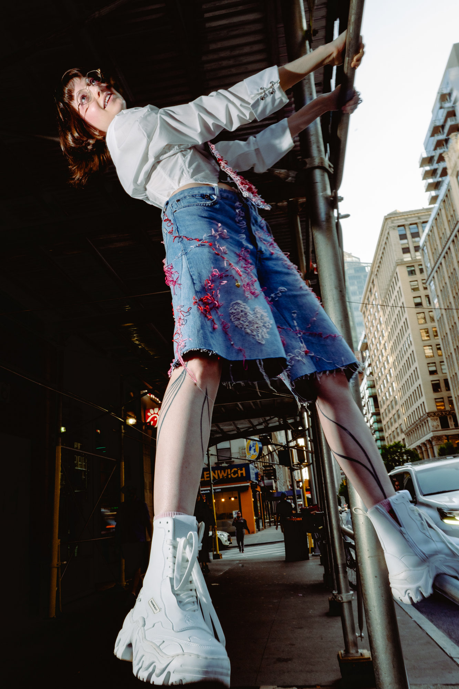
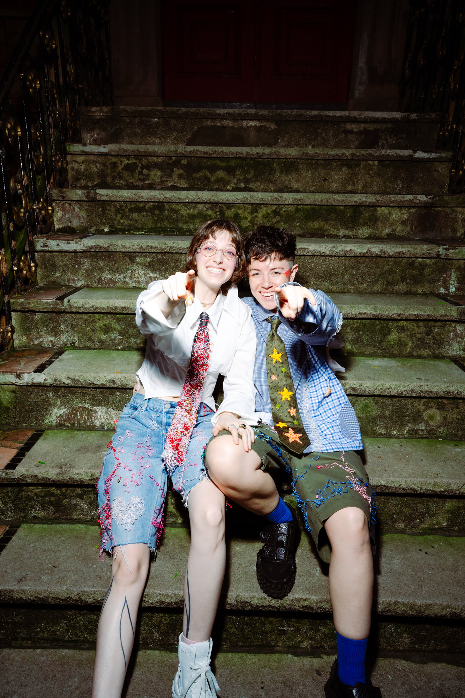
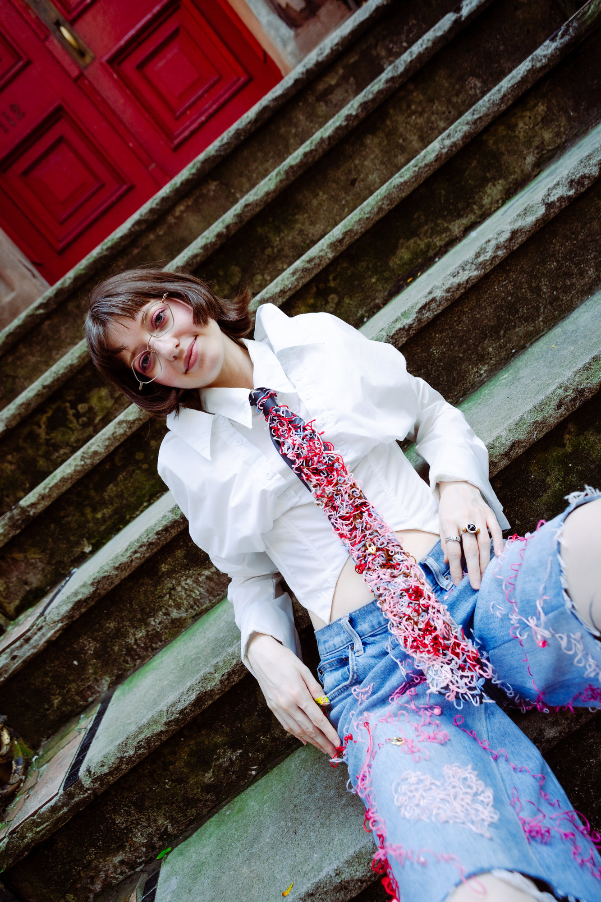
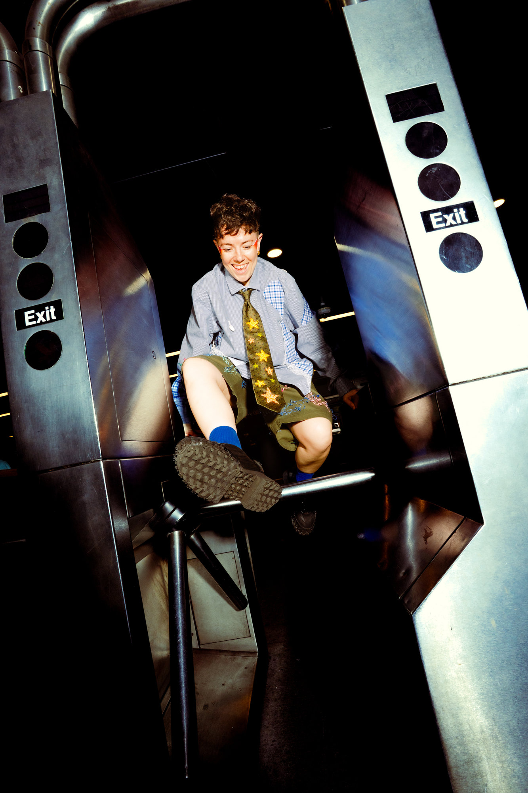
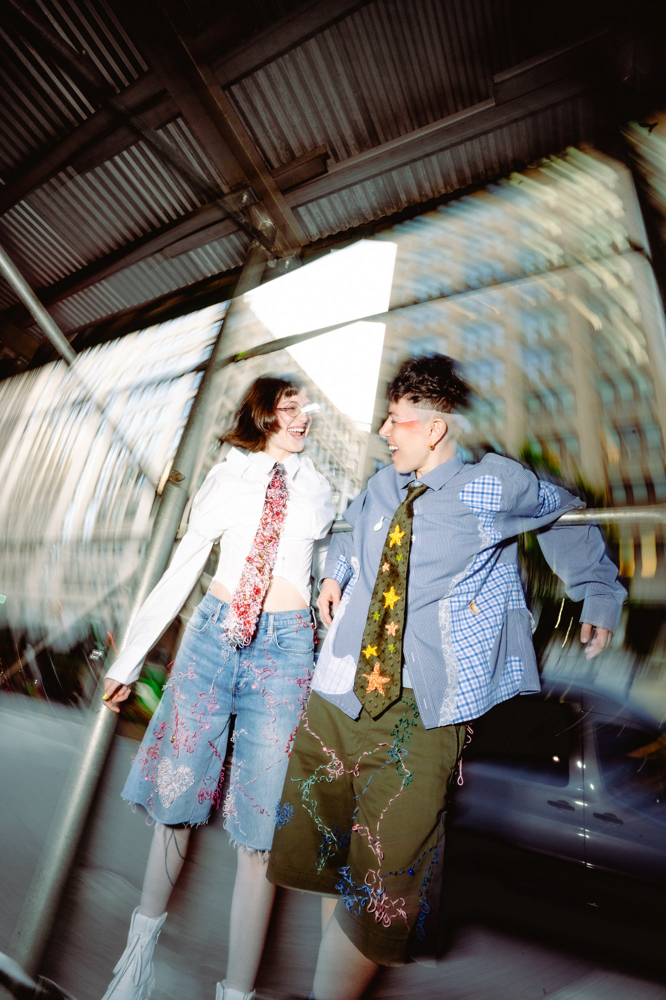
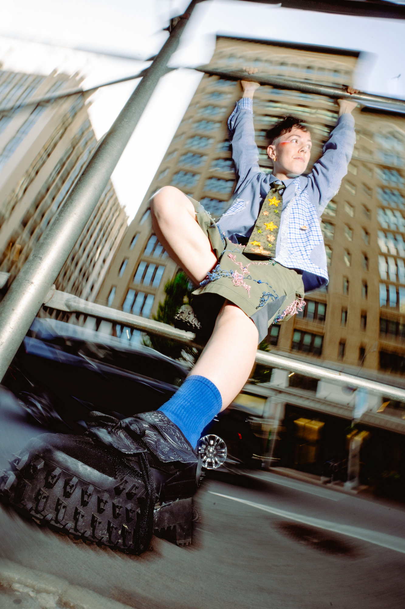
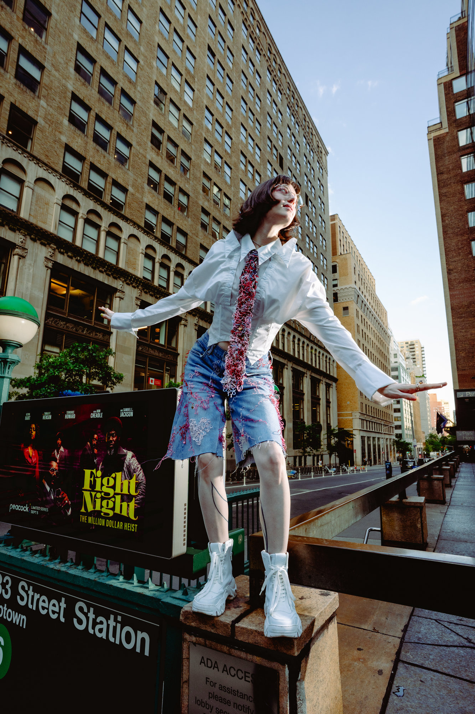
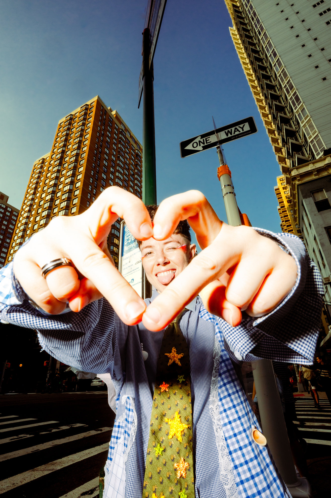
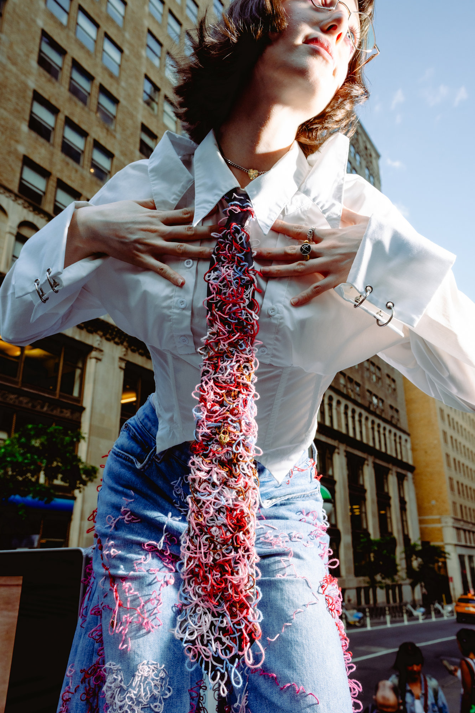
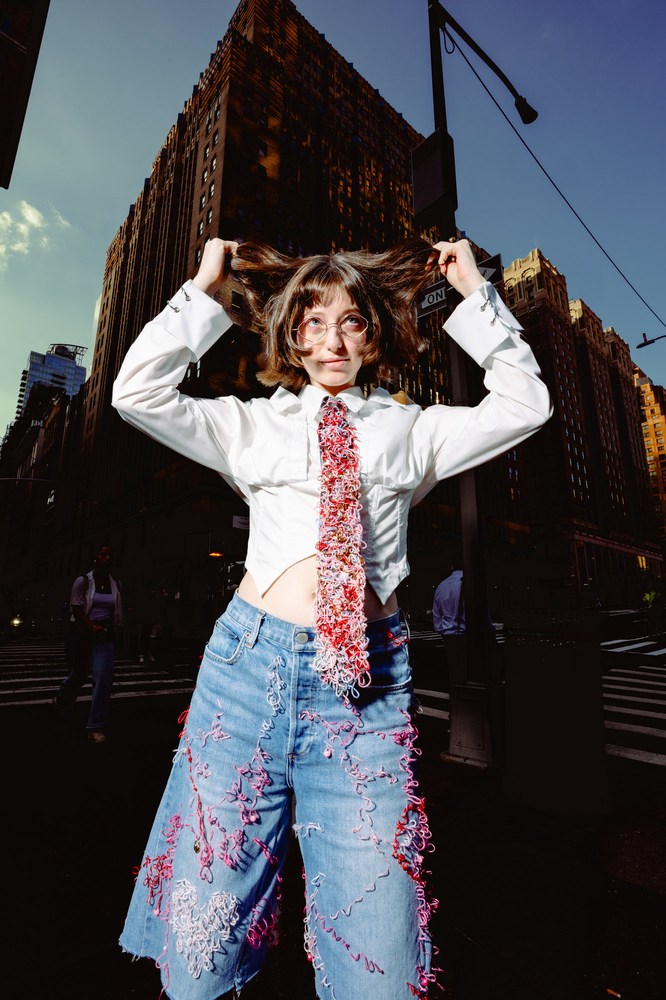